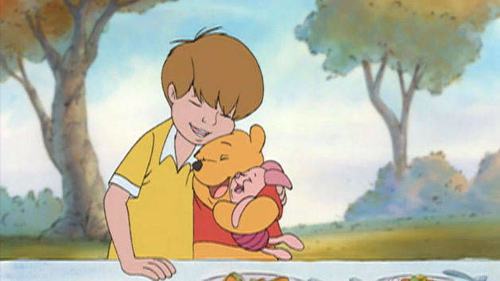
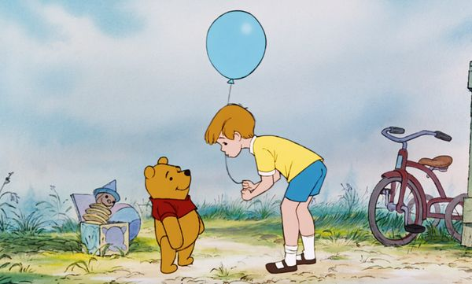
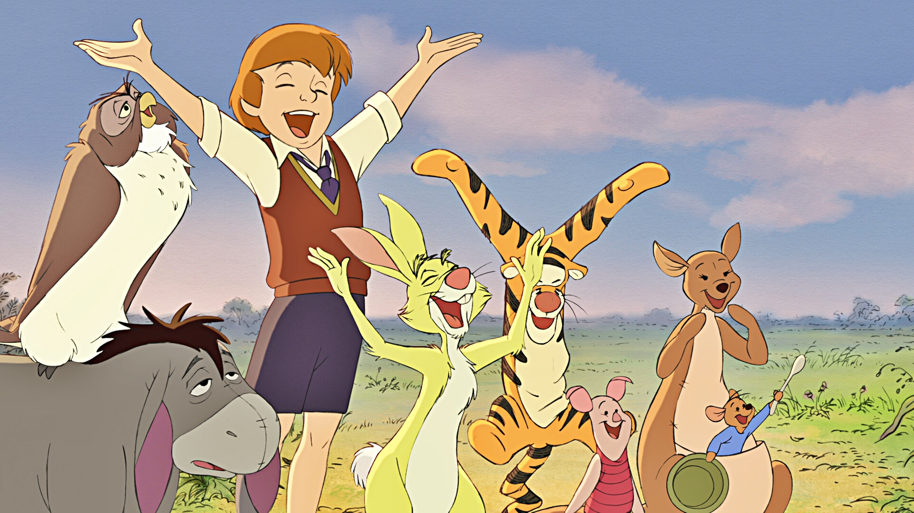
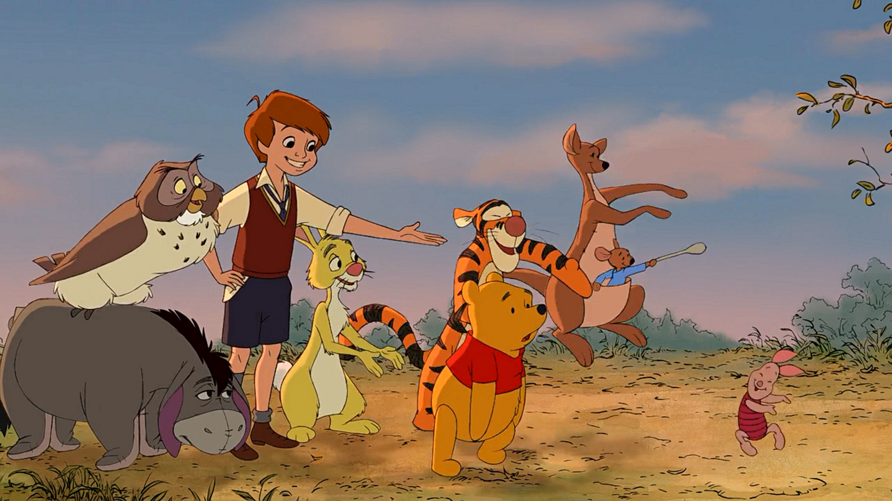
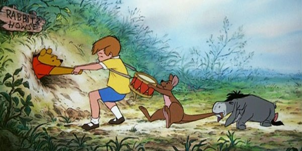
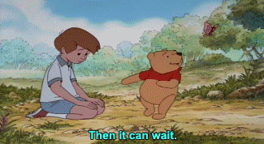

Christopher Robin
He is boy for whom Winnie-the-Pooh was originally written. He is also a part of the stories and poems written by his father A.A. Milne.
He is the master of the 100 Acre Woods. Christopher Robin’s address in the forest is – Top of the Forest (High Ground), 100 Acre Wood East.
He is everyone’s best friend and mostly indulges in activities to help his friends to get them out of tricky situations, most of the times
it’s the silly old Pooh bear that he helps. He will help Pooh collect honey, he will rescue Roo & Tigger when they are stuck in high trees in the
forest and shall nail Eeyore’s tail. His favorite food is probably Birthday cake and one of his favourite things to do is hosting birthday and hero
parties. But what he likes doing best is Nothing; "It means just going along, listening to all the thing's you can't hear, and not bothering".






Image References
[Digital image]. (n.d.). Retrieved from https://lumiere-a.akamaihd.net/v1/images/open-uri20150422-12561-1cttpt4_78507459.jpg
[Digital image]. (n.d.). Retrieved from https://s-media-cache-ak0.pinimg.com/736x/c8/5c/13/c85c13e745c807c0d9c0ff72ce2b7028.jpg
[Digital image]. (n.d.). Retrieved from http://images5.fanpop.com/image/photos/31800000/Walt-Disney-Screencaps-Owl-Eeyore-Christopher-Robin-Rabbit-Tigger-Piglet-Kanga-Roo-walt-disney-characters-31894720-2560-1440.jpg
[Digital image]. (n.d.). Retrieved from http://mono29.mthai.com/wp-content/uploads/2016/10/winnie-2011.jpg
[Digital image]. (n.d.). Retrieved from http://www.toonbarn.com/wordpress/wp-content/uploads/2013/08/many-adventures-of-winnie-the-pooh-live-pooh-stuck-in-rabbits-hole-600x300.jpg
[Digital image]. (n.d.). Retrieved from https://s-media-cache-ak0.pinimg.com/originals/99/e1/b0/99e1b019d9f8ec24084cc72d0f09bb36.gif
Go to Home